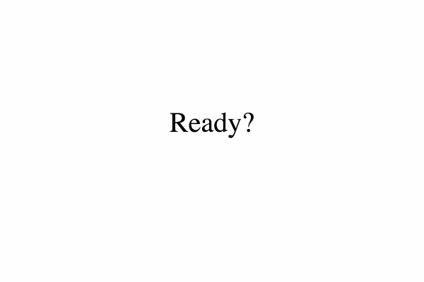

The Creative Brain Lab is a cognitive neuroscience Lab at Northwestern University that studies the component processes and behaviors that contribute to creative problem solving. We wanted to find a way to reach a more diverse population of participants and also shorten research timelines. To address this problem, I helped develop an experiment that could be run via web server.
Multi-threaded Javascript, Finite-State Machines, Experimental Study Design, Research, Data Analysis
Research in the lab was primarily centered on the brain structures, mental processes, and behaviors associated with creative problem solving. More specifically, we focused on the difference between solving a problem via analysis (step-by-step, gradual and analytic process) and solving a problem via insight (sudden and surprising, 'aha' moment). We have reason to believe that insight problem solving lies at the heart of innovation, thus it has profound implications in the workplace and the classroom.
We acquired a sample script from another lab in the Psychology Department, however, it implemented a very different experimental design and was very difficult to adapt to our needs. I learned how to make sense of a new codebase and understand how it interacted with the server, but we decided to develop our own script to execute our experiment. We developed a finite state machine that takes participants through appropriate steps of the experiment based on their responses (or lack of response) and reads and writes to files with the experiment data.
This is what a participant experiences as they go through a couple trials. The experiment has over a hundred trials with a few opportunities for breaks
You can check out the whole project on github here.